Des souvenirs en lumière
La galerie
Les plus beaux moments du gala, classés par activité.
Souvenirs
Le gala 2026 « La malle aux souvenirs », en images
Photos classées par activité. Cliquez sur une image pour l’agrandir, puis naviguez avec les flèches.
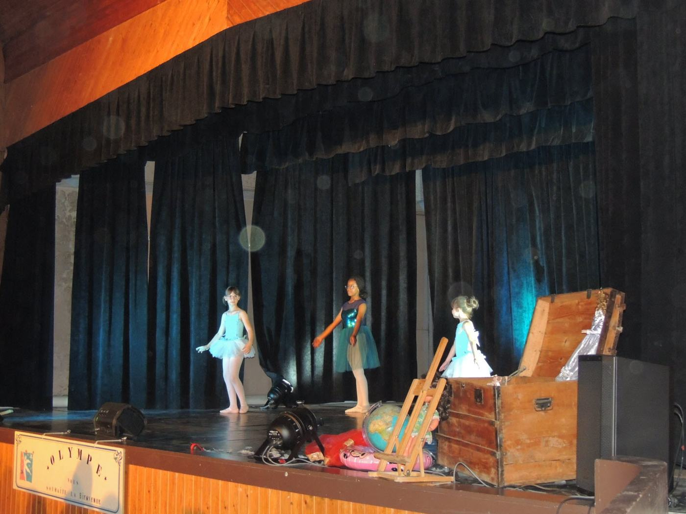
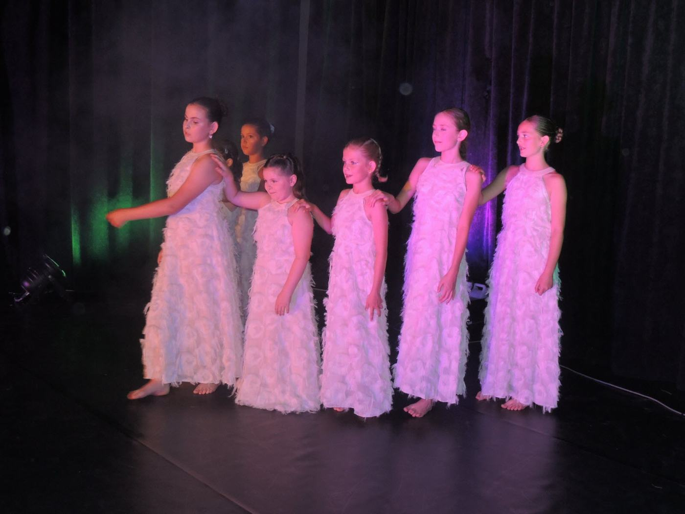


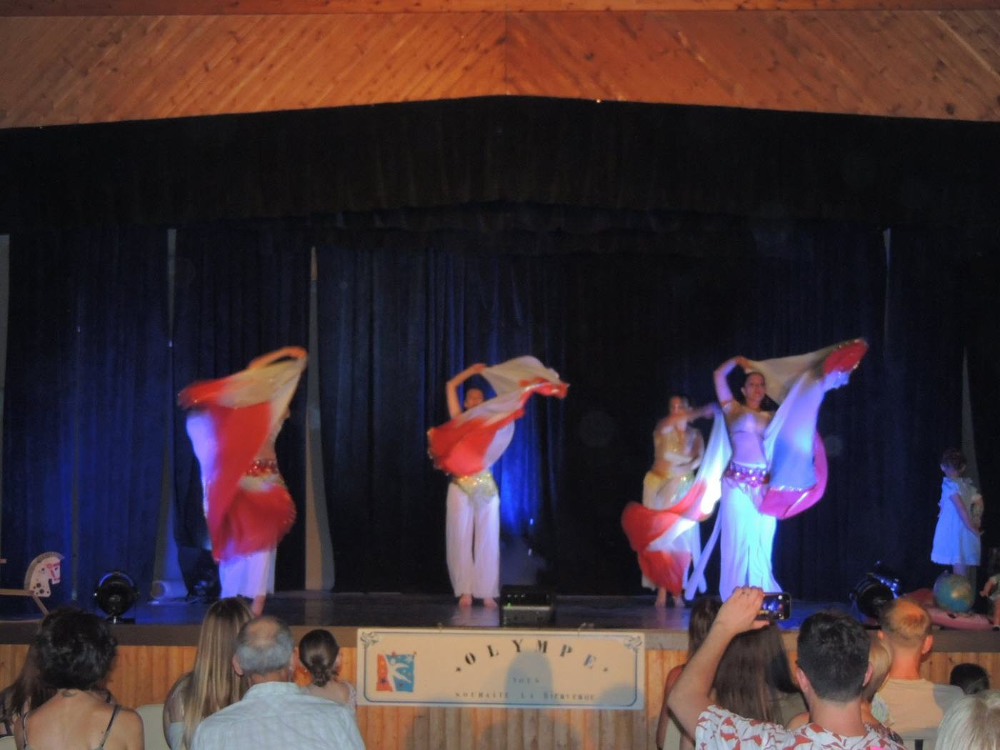

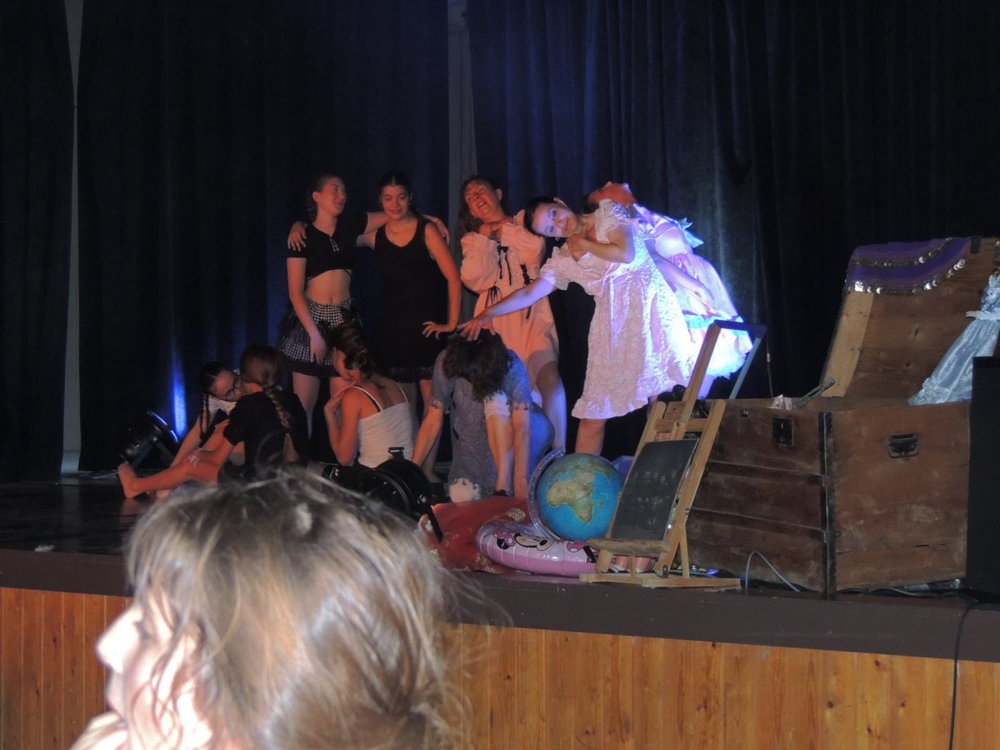

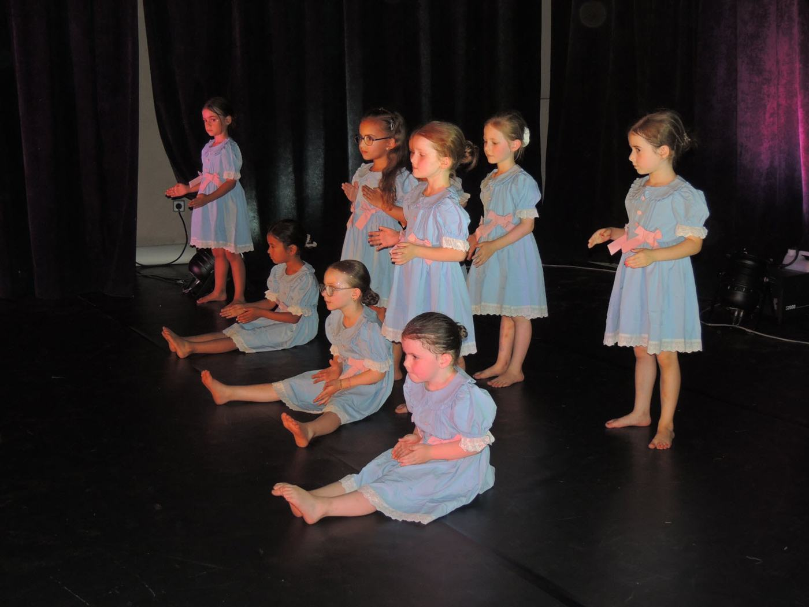
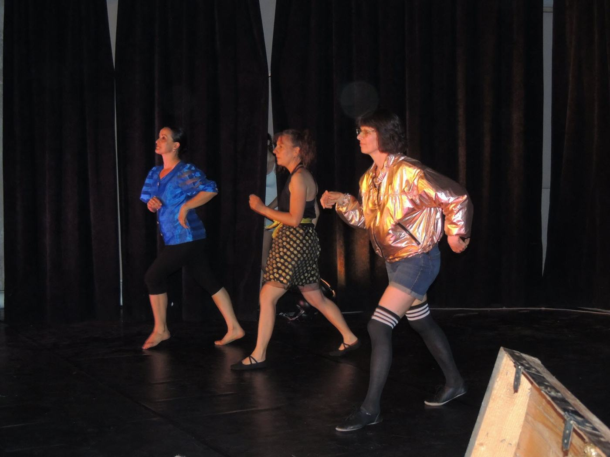


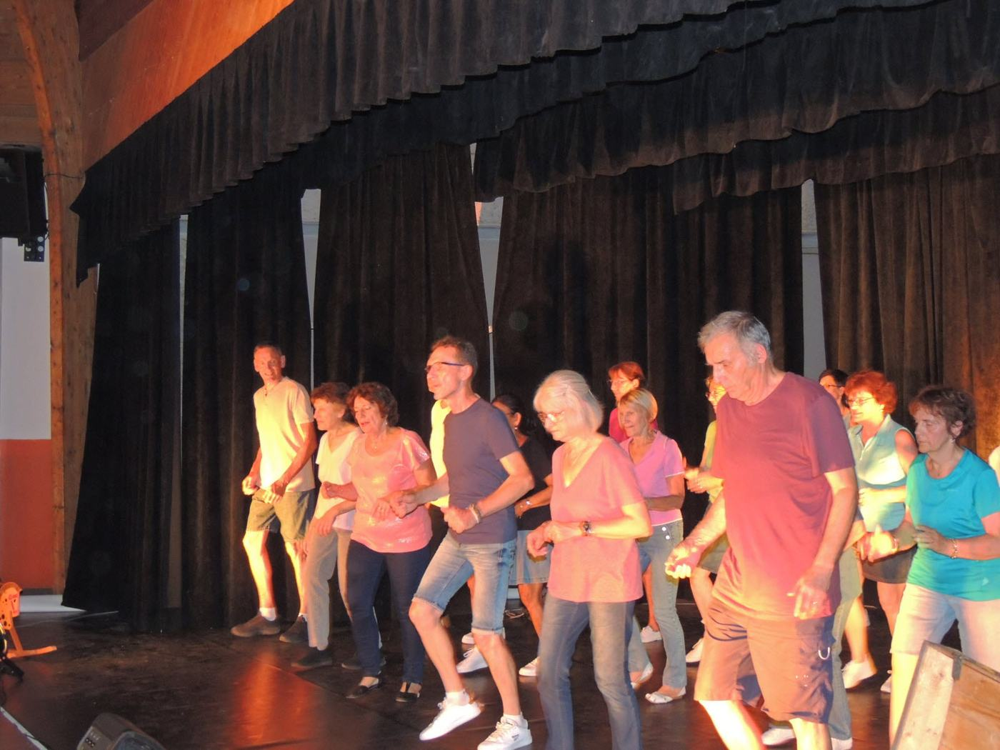
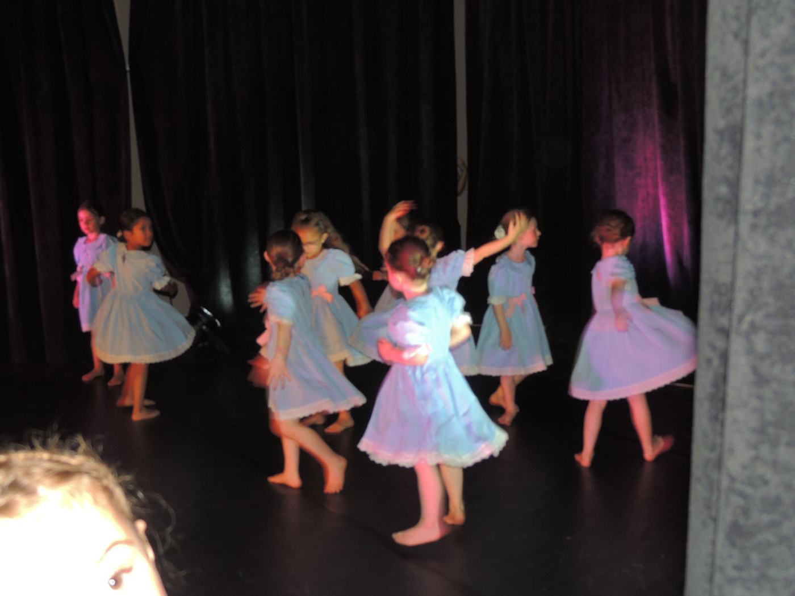
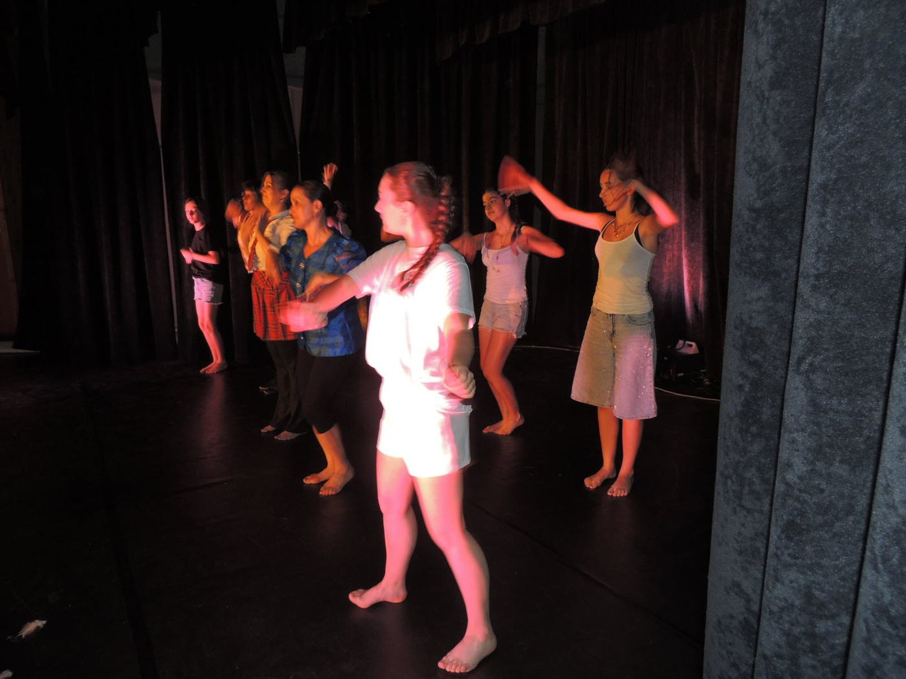
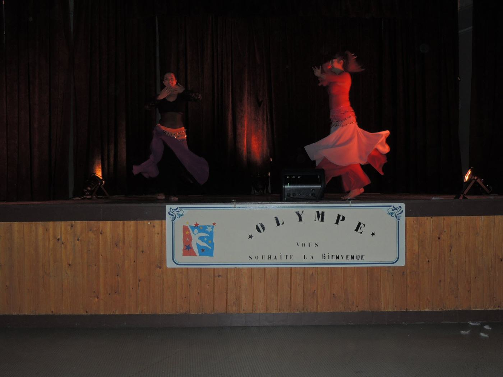
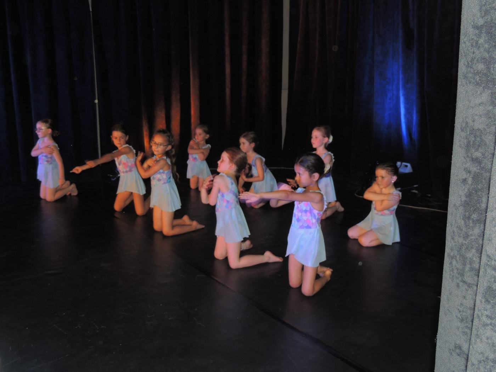
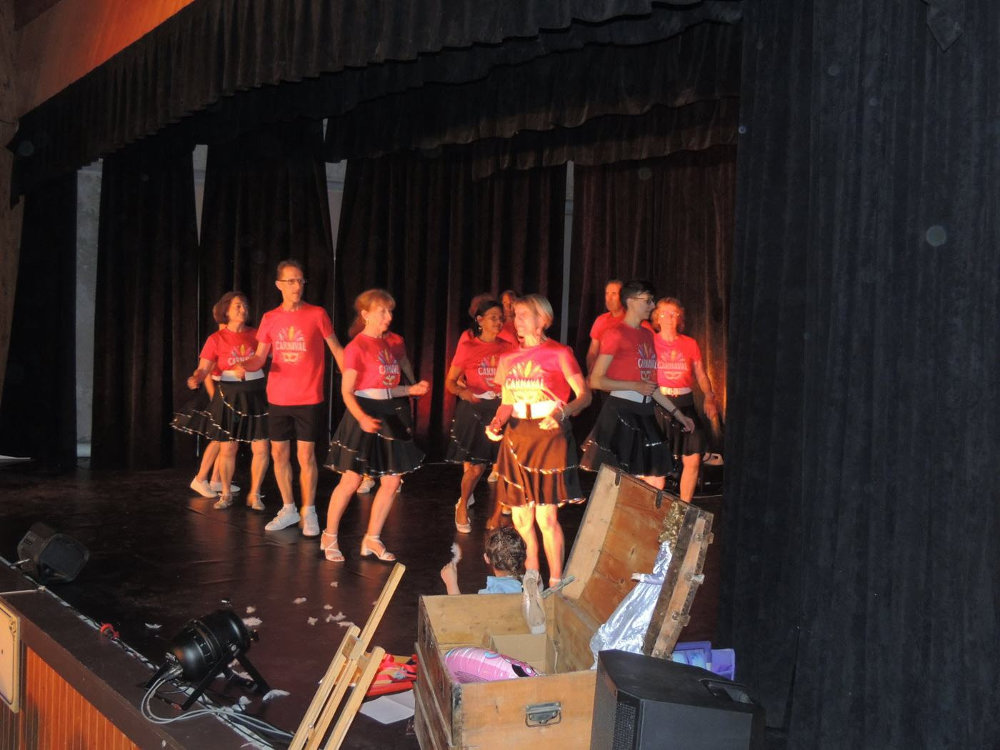
Photos : association Olympe, gala du 20 juin 2026 (salle des fêtes Eugène Vadot). À compléter : ajoutez vos propres photos dans le dossier img/ et dans la liste de cette page.
Rejoindre Olympe
Vous aussi, montez sur scène !
Une séance d’essai est possible sur simple prise de contact avec Martine Agostini. Venez comme vous êtes : le plaisir de bouger fait le reste.